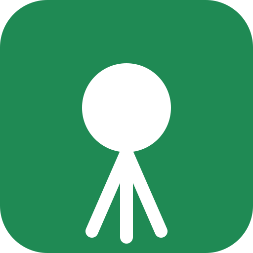
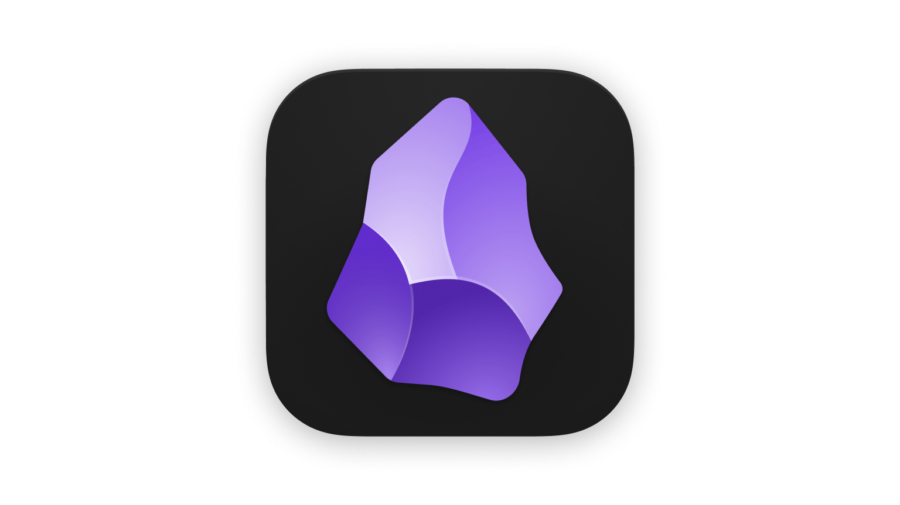

AI 實驗室 · /AI
我用 AI 把想法，做成能點的東西。
我是 AI Chatbot 產品經理。工作之外，我把 AI 當成一整個團隊來用：它幫我研究、扮演不同角色互相挑戰，也一起寫程式和測試。這頁整理了九個專案，以及我做這些專案的方法。
- 9上線或公開的專案
- 39設計過的 AI 代理人角色
- 221自動化測試守住核心邏輯
- 1,000+回測過的交易規則組合
How I work
四個步驟，從問題到上線
AI 很會產生答案，所以我把力氣花在問對問題、設下限制，以及驗證它的產出。
-
先寫清楚問題
動手前先寫 PRD：誰在用、卡在哪、怎樣才算成功。AI 幫我補齊情境和例外，判斷由我來做。
排場工具的 PRD -
拆成互相挑戰的角色
不用一個萬能 prompt，而是把任務拆給不同視角的代理人，再加一位專門唱反調、一位專門防捏造的角色。
Resume Mentor 的 30 位顧問 -
一個週末做出原型
與其停在文件，不如直接做出能操作的版本。和 AI 結對寫程式，讓想法在真實的畫面上被檢驗。
羽球模擬器 -
用測試和數據驗證
「看起來能跑」不算完成。程式寫成自動化測試；判斷先寫好檢查標準再看結果，沒通過就誠實說沒通過。
NQ 交易研究
Projects
全部專案
每個專案都從三個面向說明：我怎麼想、用了什麼技術、最後交付了什麼。


研究 · AI × 金融
NQ 價值區交易研究
用三年的分鐘資料，誠實回答一個問題：這條交易規則到底有沒有用？（研究用途，非投資建議）
- 思考
- 先寫好穩健性檢查再看結果。測了 1,000 多種規則組合，結論是「沒有一種通過」，就照實寫；接著凍結規則，改用新資料做前進測試。
- 技術
- 用 Python 逐分鐘重現交易邏輯、74 組指標跨年驗證，再寫成 TradingView Pine 指標；並請另一個 AI 模型扮演交易專家審查，抓出錯誤。
- 交付
- 可直接安裝的 TradingView 指標，加上 10 份研究文件與完整的回測數據。


產品原型 · PWA
羽毛球排場工具
讓球團場主用一支手機，就能排好今晚每一面場。
- 思考
- 先寫 PRD 定義成功：場主要能在 3 分鐘內匯入名單、開打第一場。
- 技術
- 無後端 PWA，可離線使用；拖放換人、輪替排程，並用瀏覽器語音播報上場球員。
- 交付
- 排程、名單解析與狀態轉換都有自動化測試（21 項），可在球場現場直接使用。

知識系統
Obsidian AI 知識庫
我的 AI 第二大腦，會自己長出每日與每週的整理。
- 思考
- AI 領域變化太快，與其每天追新聞，不如建立一套能持續累積、可以被 AI 查詢的結構。
- 技術
- 概念、關係地圖、應用三層筆記，搭配排程腳本與提示詞，自動產生每日快訊和每週精選。
- 交付
- 30 多篇結構化筆記，也是我請 AI 回答問題時優先參考的知識來源。
Principles
我和 AI 合作的界線
-
AI 擴張選項，我負責收斂
讓 AI 盡量多提方案和反例，但要做什麼、不做什麼，由我決定並負責。
-
機密資料不進公開模型
客戶資料和公司內部資訊一律不放進公開模型，side project 只用公開或自己產生的資料。
-
每個產出都要能被驗證
程式有測試，內容有出處，提示詞有版本紀錄。說不出怎麼驗證的產出，就不算完成。